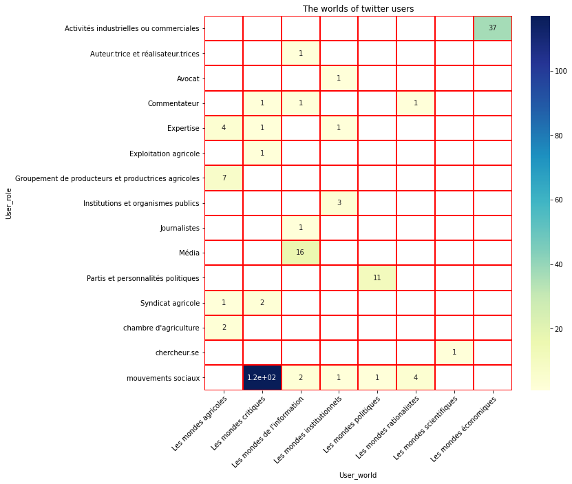

Contents
import pandas as pd
import os
import numpy as np
import numpy as np
import seaborn as sns
#import bamboolib
#Path of data
aymeric = "/home/aymeric/python-scripts/anses_medialab/datas/"
df_tweet = pd.read_csv(f"{aymeric}tweets_pesticides/annotation_compte_twitter.csv", sep = ",")
df_tweet.columns
Index(['cluster_id', 'data', 'user_name', 'Comment', 'Type_entite', 'Genre',
'User_role2', 'User_role', 'Orientation', 'thematique', 'theme_rec',
'theme_rec2', 'Scale', 'Locality', 'associated_fb_url',
'associated_website', 'Stake_holder_anses', 'user_account_url',
'user_screen_name', 'user_location', 'user_id', 'user_verified',
'user_description', 'user_url', 'user_image', 'user_tweets',
'user_followers', 'user_friends', 'user_likes', 'user_lists',
'user_created_at', 'user_timestamp_utc', 'quoted_user_id',
'user_id_size', 'user_retweet_count_sum', 'user_ratio_glypho', 'weight',
'density', 'id', 'world', 'theme', 'annotator', 'annotation_id',
'created_at', 'updated_at', 'lead_time'],
dtype='object')
df_tweet["world"] = df_tweet["world"].str.replace('\{"choices": \[', "")
df_tweet["world"]
df_tweet["world"] = df_tweet["world"].str.replace('\]\}', "")
df_tweet["world"]
df_tweet["world"] = df_tweet["world"].str.replace('\"', "")
df_tweet["world"] = df_tweet["world"].str.split(',')
df_tweet
/tmp/ipykernel_30227/637638899.py:1: FutureWarning: The default value of regex will change from True to False in a future version.
df_tweet["world"] = df_tweet["world"].str.replace('\{"choices": \[', "")
/tmp/ipykernel_30227/637638899.py:3: FutureWarning: The default value of regex will change from True to False in a future version.
df_tweet["world"] = df_tweet["world"].str.replace('\]\}', "")
| cluster_id | data | user_name | Comment | Type_entite | Genre | User_role2 | User_role | Orientation | thematique | ... | weight | density | id | world | theme | annotator | annotation_id | created_at | updated_at | lead_time | |
|---|---|---|---|---|---|---|---|---|---|---|---|---|---|---|---|---|---|---|---|---|---|
| 0 | NaN | NaN | Aloe-vera Bien-être | NaN | Personne | NaN | Promoteur | Activités industrielles ou commerciales | NaN | NaN | ... | NaN | NaN | 999 | [Les mondes économiques] | Produits pharmaceutiques et cosmétiques | 2 | 502 | 2022-06-21T09:57:20.280498Z | 2022-06-21T09:57:20.280534Z | 6.453 |
| 1 | NaN | NaN | Podeus #JeSuisVacciné #pfizerisé 💉 | NaN | NaN | NaN | NaN | NaN | NaN | NaN | ... | NaN | NaN | 998 | [Les mondes rationalistes] | Rationaliste | 2 | 501 | 2022-06-21T09:57:12.985394Z | 2022-06-21T09:57:12.985450Z | 13.813 |
| 2 | NaN | NaN | julien_54 🌾🌽🚜🏍 | NaN | NaN | NaN | NaN | NaN | NaN | NaN | ... | NaN | NaN | 997 | [Les mondes agricoles] | Défense des agricultures conventionnelles | 2 | 500 | 2022-06-21T09:56:58.123226Z | 2022-06-21T09:56:58.123306Z | 25.632 |
| 3 | NaN | NaN | Emmanuel Comte | NaN | NaN | NaN | NaN | NaN | NaN | NaN | ... | NaN | NaN | 996 | [Les mondes économiques] | Santé | 2 | 499 | 2022-06-21T09:56:31.670855Z | 2022-06-21T09:56:31.670890Z | 12.157 |
| 4 | NaN | NaN | Gilles Callot 🇫🇷🇪🇺💉💉 | NaN | NaN | NaN | NaN | NaN | NaN | NaN | ... | NaN | NaN | 995 | [Les mondes rationalistes] | Rationaliste | 2 | 498 | 2022-06-21T09:56:18.451434Z | 2022-06-21T09:56:18.451467Z | 15.054 |
| ... | ... | ... | ... | ... | ... | ... | ... | ... | ... | ... | ... | ... | ... | ... | ... | ... | ... | ... | ... | ... | ... |
| 459 | 1.0 | Delphine Batho & sudic lisette | Cricri | NaN | Personne | Homme | Commentateur | NaN | actualité | actualité | ... | 0,01889285762 | 0,79195819 | 505 | [Les mondes rationalistes, Les mondes scienti... | Rationaliste | 2 | 7 | 2022-06-20T16:28:58.541706Z | 2022-06-20T16:28:58.541827Z | 37.582 |
| 460 | 0.0 | Emmanuelle Ducros & JF Proust | jason hunt #lanceurd'avenir | NaN | Personne | Homme | Commentateur | NaN | actualité | actualité | ... | 0,0089341265 | 0,8023743698 | 504 | [Les mondes rationalistes] | Rationaliste | 2 | 6 | 2022-06-20T16:28:19.869011Z | 2022-06-20T16:28:19.869045Z | 24.838 |
| 461 | 0.0 | Emmanuelle Ducros & JF Proust | Géraldine Woessner | NaN | Personne | Femme | Journalistes | Journalistes | actualité | actualité | ... | 0,01081644427 | 0,8023743698 | 503 | [Les mondes de l'information] | Actualité | 2 | 5 | 2022-06-20T16:27:54.118494Z | 2022-06-20T16:27:54.118537Z | 13.235 |
| 462 | 0.0 | Emmanuelle Ducros & JF Proust | Antoine d'Abbundo | La Croix | Personne | Homme | Journalistes | Journalistes | actualité | actualité | ... | 0,01318537461 | 0,8023743698 | 502 | [Les mondes de l'information] | Actualité | 2 | 4 | 2022-06-20T16:27:39.651029Z | 2022-06-20T16:27:39.651061Z | 15.460 |
| 463 | 0.0 | Emmanuelle Ducros & JF Proust | Ze Matthiou (Ca a l'air cool Ze) | NaN | Personne | Homme | Commentateur | NaN | actualité | actualité | ... | 0,01898737775 | 0,8023743698 | 501 | [Les mondes agricoles, Les mondes rationalistes] | Défense des agricultures conventionnelles | 2 | 3 | 2022-06-20T16:27:22.885606Z | 2022-06-20T16:27:22.885641Z | 45.269 |
464 rows × 46 columns
df_tweet["User_world"] = np.nan
df_tweet["User_world2"] =np.nan
for x, world in enumerate(df_tweet["world"]):
if type(world) is float:
df_tweet["User_world"].iloc[x] =np.nan
df_tweet["User_world2"].iloc[x] =np.nan
else:
if len(world) == 1:
df_tweet["User_world"].iloc[x] = world[0].strip()
df_tweet["User_world2"].iloc[x] = world[0].strip()
elif len(world) > 1 :
df_tweet["User_world"].iloc[x] = world[0].strip()
df_tweet["User_world2"].iloc[x] = world[1].strip()
elif len(world) == 0 :
df_tweet["User_world"].iloc[x] =np.nan
df_tweet["User_world2"].iloc[x] =np.nan
/home/aymeric/anaconda3/envs/analyse_tweets/lib/python3.9/site-packages/pandas/core/indexing.py:1732: SettingWithCopyWarning:
A value is trying to be set on a copy of a slice from a DataFrame
See the caveats in the documentation: https://pandas.pydata.org/pandas-docs/stable/user_guide/indexing.html#returning-a-view-versus-a-copy
self._setitem_single_block(indexer, value, name)
df_tweet.columns
Index(['cluster_id', 'data', 'user_name', 'Comment', 'Type_entite', 'Genre',
'User_role2', 'User_role', 'Orientation', 'thematique', 'theme_rec',
'theme_rec2', 'Scale', 'Locality', 'associated_fb_url',
'associated_website', 'Stake_holder_anses', 'user_account_url',
'user_screen_name', 'user_location', 'user_id', 'user_verified',
'user_description', 'user_url', 'user_image', 'user_tweets',
'user_followers', 'user_friends', 'user_likes', 'user_lists',
'user_created_at', 'user_timestamp_utc', 'quoted_user_id',
'user_id_size', 'user_retweet_count_sum', 'user_ratio_glypho', 'weight',
'density', 'id', 'world', 'theme', 'annotator', 'annotation_id',
'created_at', 'updated_at', 'lead_time', 'User_world', 'User_world2'],
dtype='object')
df_fb = pd.read_csv(f"{aymeric}datas_facebook/annotation_compte_facebook.csv", sep = ",")
df_fb.columns
Index(['account_url', 'account_name', 'Comment', 'Type_entite', 'Head',
'Genre', 'User_role', 'Mondes', 'account_description', 'Orientation',
'thematique', 'Scale', 'Locality', 'account_a_propos',
'associated_twitter', 'associated_website', 'Stake_holder_anses',
'account_ct_id', 'account_id', 'account_platform', 'account_name.1',
'account_handle', 'account_profile_image', 'account_subscriber_count',
'account_verified', 'account_type', 'account_page_admin_top_country',
'account_publication', 'total_posts', 'ratio_posts'],
dtype='object')
df_fb = df_fb.loc[df_fb["Type_entite"].isna() == False]
df_fb["User_world"] = np.nan
df_fb["User_world2"] =np.nan
df_fb["world"] = df_fb["Mondes"].str.split('|')
for x, world in enumerate(df_fb["world"]):
if type(world) is float:
df_fb["User_world"].iloc[x] =np.nan
df_tweet["User_world2"].iloc[x] =np.nan
else:
if len(world) == 1:
df_fb["User_world"].iloc[x] = world[0]
df_fb["User_world2"].iloc[x] = world[0]
elif len(world) > 1 :
df_fb["User_world"].iloc[x] = world[0]
df_fb["User_world2"].iloc[x] = world[1]
elif len(world) == 0 :
df_fb["User_world"].iloc[x] =np.nan
df_tweet["User_world2"].iloc[x] =np.nan
df_tweet.columns
Index(['cluster_id', 'data', 'user_name', 'Comment', 'Type_entite', 'Genre',
'User_role2', 'User_role', 'Orientation', 'thematique', 'theme_rec',
'theme_rec2', 'Scale', 'Locality', 'associated_fb_url',
'associated_website', 'Stake_holder_anses', 'user_account_url',
'user_screen_name', 'user_location', 'user_id', 'user_verified',
'user_description', 'user_url', 'user_image', 'user_tweets',
'user_followers', 'user_friends', 'user_likes', 'user_lists',
'user_created_at', 'user_timestamp_utc', 'quoted_user_id',
'user_id_size', 'user_retweet_count_sum', 'user_ratio_glypho', 'weight',
'density', 'id', 'world', 'theme', 'annotator', 'annotation_id',
'created_at', 'updated_at', 'lead_time', 'User_world', 'User_world2'],
dtype='object')
df_fb = df_fb[['account_url', 'account_name', 'Comment', 'Type_entite',
'Genre', 'User_role', 'world',
'User_world',
'User_world2',
'account_description', 'Orientation',
'thematique', 'account_a_propos',
'associated_twitter', 'associated_website',
'account_id', 'account_platform',
'account_handle', 'account_type', 'account_page_admin_top_country',
'account_publication', 'total_posts', 'ratio_posts', ]]
df_tweet = df_tweet[['user_name', 'Comment', 'Type_entite', 'Genre',
'User_role', 'world','User_world', 'User_world2', 'Orientation', 'associated_fb_url',
'associated_website', 'user_account_url',
'user_screen_name', 'user_location', 'user_id',
'user_description', 'user_url', 'user_tweets',
'user_created_at',
'user_id_size', 'user_ratio_glypho', 'theme']]
len(df_tweet.columns)
22
df_tweet = df_tweet.rename(columns={
'user_tweets': 'user_total_post',
'user_id_size' : 'user_total_pest_posts',
'user_ratio_glypho': 'user_ratio_pest_posts',
'theme' : 'main_thematic'})
df_tweet["platform"] = "twitter"
df_fb = df_fb.rename(columns={
'account_url' : "user_account_url",
'account_name': 'user_name',
'account_description' : 'user_tag',
'thematique': 'main_thematic',
'account_a_propos': 'user_description',
'associated_twitter' : 'associated_tw_url',
'account_id': 'user_id',
'account_platform' : "platform",
'account_handle': 'user_screen_name',
'account_publication': 'user_total_pest_posts',
'total_posts' : 'user_total_posts',
'ratio_posts' : 'user_ratio_pest_posts'
})
df_fb['platform']
0 Facebook
1 Facebook
2 Facebook
3 Facebook
4 Facebook
...
404 Facebook
406 Facebook
430 Facebook
441 Facebook
603 Facebook
Name: platform, Length: 230, dtype: object
df = pd.concat([df_tweet, df_fb])
df.to_csv("fb_and_tw_annotated_account.csv", sep = "\t")
df.groupby(['User_world','User_role','platform']).size()#.sort_values(ascending=False)
User_world User_role platform
Les mondes agricoles Activités industrielles ou commerciales twitter 5
Expertise Facebook 4
twitter 1
Exploitant.e agricole twitter 63
Groupement de producteurs et productrices agricoles Facebook 7
twitter 2
Institutions et organismes publics twitter 2
Journalistes twitter 2
Média twitter 11
Partis et personnalités politiques twitter 3
Syndicat agricole Facebook 1
twitter 2
chambre d'agriculture Facebook 2
mouvements sociaux twitter 5
Les mondes critiques Commentateur Facebook 1
Expertise Facebook 1
twitter 1
Exploitation agricole Facebook 1
Journalistes twitter 5
Média twitter 5
Partis et personnalités politiques twitter 6
Syndicat agricole Facebook 2
mouvements sociaux Facebook 117
twitter 51
Les mondes de l'information Auteur.trice et réalisateur.trices Facebook 1
twitter 1
Commentateur Facebook 1
Journalistes Facebook 1
twitter 14
Média Facebook 16
twitter 25
Partis et personnalités politiques twitter 1
mouvements sociaux Facebook 2
twitter 1
Les mondes institutionnels Avocat Facebook 1
Expertise Facebook 1
twitter 2
Institutions et organismes publics Facebook 3
twitter 3
Média twitter 1
mouvements sociaux Facebook 1
twitter 1
Les mondes politiques Partis et personnalités politiques Facebook 11
twitter 10
mouvements sociaux Facebook 1
twitter 1
Les mondes rationalistes Commentateur Facebook 1
mouvements sociaux Facebook 4
twitter 1
Les mondes scientifiques chercheur.se Facebook 1
Les mondes économiques Activités industrielles ou commerciales Facebook 37
twitter 12
Média twitter 2
dtype: int64
dft = df.loc[df["platform"] == "Facebook"]
dft = dft[["user_name","User_world", "User_role"]].dropna()
dft
| user_name | User_world | User_role | |
|---|---|---|---|
| 0 | Phyto Paris | Les mondes économiques | Activités industrielles ou commerciales |
| 1 | Rambo Côte d’Ivoire | Les mondes économiques | Activités industrielles ou commerciales |
| 2 | Campagne Glyphosate 83 | Les mondes critiques | mouvements sociaux |
| 3 | Campagne Glyphosate Réunion | Les mondes critiques | mouvements sociaux |
| 4 | Secrets Toxiques | Les mondes critiques | mouvements sociaux |
| ... | ... | ... | ... |
| 344 | José Bové | Les mondes politiques | Partis et personnalités politiques |
| 375 | Pierre Rabhi, au nom de la terre - Le film | Les mondes de l'information | Média |
| 404 | Le Jeune Engagé | Les mondes critiques | Commentateur |
| 441 | Sos-Loue Rivières Comtoises | Les mondes critiques | mouvements sociaux |
| 603 | EELV Étoile - Huveaune | Les mondes politiques | Partis et personnalités politiques |
218 rows × 3 columns
len(result.columns)
---------------------------------------------------------------------------
NameError Traceback (most recent call last)
/tmp/ipykernel_30227/1210659975.py in <module>
----> 1 len(result.columns)
NameError: name 'result' is not defined
# Create a pivot table
dft = dft.groupby(['User_world','User_role']).count().reset_index()
dft
result = dft.pivot(index='User_world',columns='User_role',values='user_name')#.fillna(0)
#result = result + result.T #get a symmetric matrix
result
dft
| User_world | User_role | user_name | |
|---|---|---|---|
| 0 | Les mondes agricoles | Expertise | 4 |
| 1 | Les mondes agricoles | Groupement de producteurs et productrices agri... | 7 |
| 2 | Les mondes agricoles | Syndicat agricole | 1 |
| 3 | Les mondes agricoles | chambre d'agriculture | 2 |
| 4 | Les mondes critiques | Commentateur | 1 |
| 5 | Les mondes critiques | Expertise | 1 |
| 6 | Les mondes critiques | Exploitation agricole | 1 |
| 7 | Les mondes critiques | Syndicat agricole | 2 |
| 8 | Les mondes critiques | mouvements sociaux | 117 |
| 9 | Les mondes de l'information | Auteur.trice et réalisateur.trices | 1 |
| 10 | Les mondes de l'information | Commentateur | 1 |
| 11 | Les mondes de l'information | Journalistes | 1 |
| 12 | Les mondes de l'information | Média | 16 |
| 13 | Les mondes de l'information | mouvements sociaux | 2 |
| 14 | Les mondes institutionnels | Avocat | 1 |
| 15 | Les mondes institutionnels | Expertise | 1 |
| 16 | Les mondes institutionnels | Institutions et organismes publics | 3 |
| 17 | Les mondes institutionnels | mouvements sociaux | 1 |
| 18 | Les mondes politiques | Partis et personnalités politiques | 11 |
| 19 | Les mondes politiques | mouvements sociaux | 1 |
| 20 | Les mondes rationalistes | Commentateur | 1 |
| 21 | Les mondes rationalistes | mouvements sociaux | 4 |
| 22 | Les mondes scientifiques | chercheur.se | 1 |
| 23 | Les mondes économiques | Activités industrielles ou commerciales | 37 |
result.index
Index(['Les mondes agricoles', 'Les mondes critiques',
'Les mondes de l'information', 'Les mondes institutionnels',
'Les mondes politiques', 'Les mondes rationalistes',
'Les mondes scientifiques', 'Les mondes économiques'],
dtype='object', name='User_world')
import matplotlib
import matplotlib.pyplot as plt
column_name = result.columns
row_name = result.index
plt.rcParams["figure.figsize"] = (10,10)
fig = plt.subplots()
ax = sns.heatmap(result.T, annot=True, cmap="YlGnBu", linewidths=2, linecolor='red')
# Rotate the tick labels and set their alignment.
plt.setp(ax.get_xticklabels(), ha="right", rotation = 45,
rotation_mode="anchor")
ax.set_title("The worlds of twitter users")
plt.show()

m = result.to_numpy
def check_symmetric(a, rtol=1e-05, atol=1e-08):
return np.allclose(a, a.T, rtol=rtol, atol=atol)
result